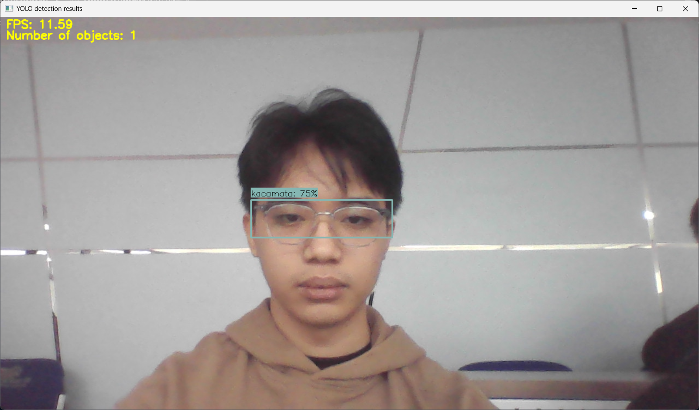
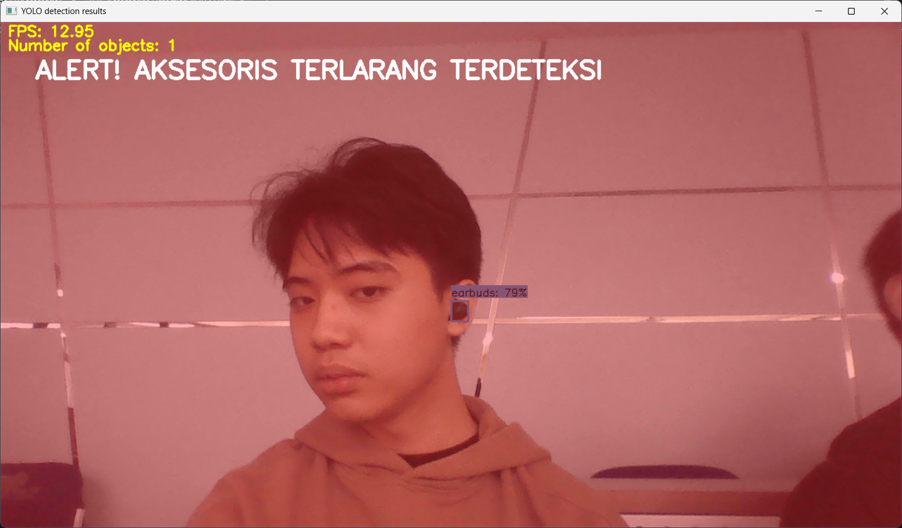
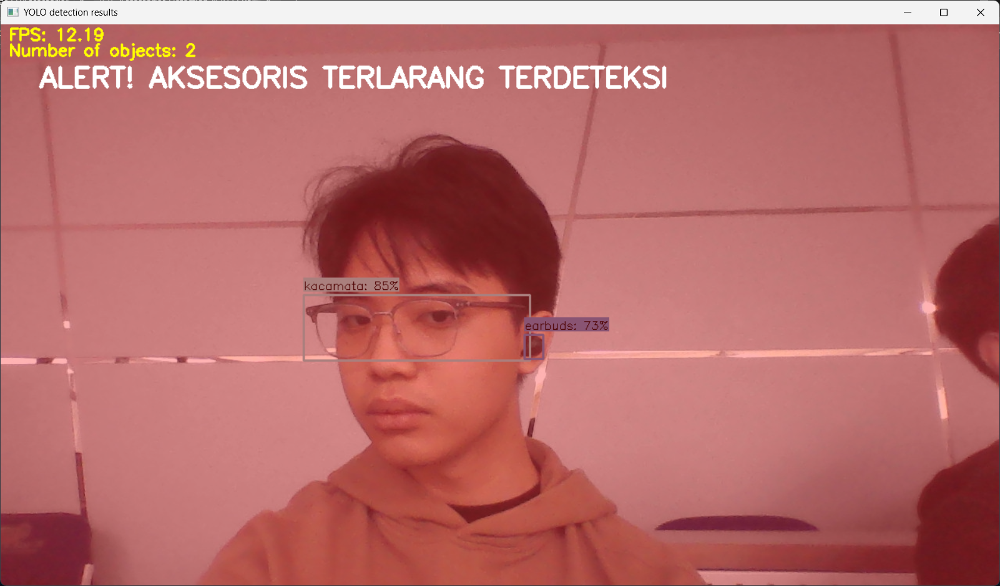

Real-Time Restricted Accessories Detection System
A real-time computer vision system using a custom-trained YOLO model to detect restricted accessories such as earbuds, vape, hat, etc from live camera input.


Detects restricted accessories at office entrances using a dedicated camera, providing real-time bounding boxes and confidence scores for clear identification.

Triggers a real-time visual warning when prohibited accessories are detected, supporting workplace compliance and entry control.